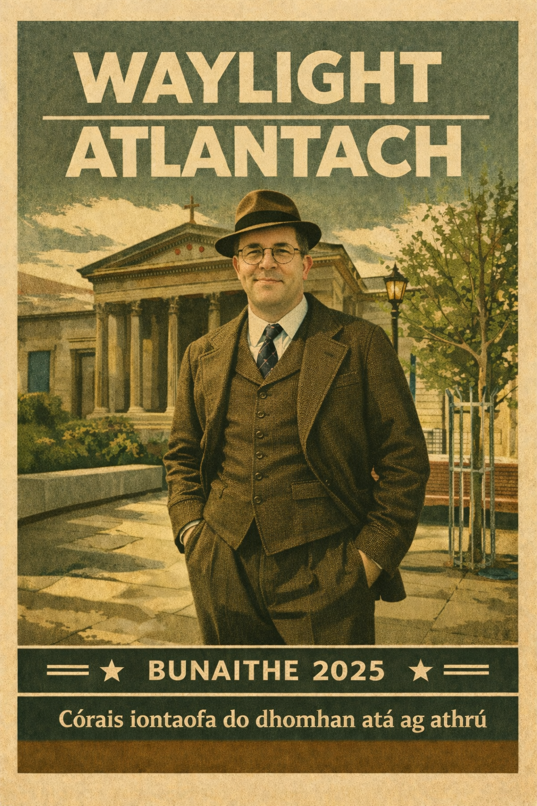

Gearrthóg phraiticiúil
Socraímid toradh amháin. Gearrtar an chuid eile. Faigheann tú seiftiú, ní laethanta caite ag samhlú.
Eolas Fúinn
Tá WayLight Atlantic do dhaoine ar mian leo go mbeadh a ndomhan digiteach ciallmhar: leathanaigh ghlana, fillteáin shoiléire, nósanna seasmhacha agus ríomhaire nó suíomh a dhéanann an jab gan torann.

Is mise Alan Gallagher, bunaitheoir WayLight Atlantic.
Is ball mé den diaspóra Éireannach i mBristol, agus tá tamall fada caite agam i mo chónaí agus ag obair in Éirinn agus sa Ríocht Aontaithe araon. Mhúnlaigh an meascán sin mo chuid oibre: praiticiúil, dírithe ar chórais, agus go ciúin aireach ar conas a úsáideann daoine rudaí ó lá go lá.
Go gairmiúil, clúdaíonn mo chúlra TF fiontraíochta, slándáil faisnéise, agus rialachas cúram sláinte — go háirithe i Rialú Ionfhabhtaithe. D'oibrigh mé le córais rochtana slána, soláthar crua-earraí ar scála mór, agus slabhraí soláthair casta, agus le déanaí san NHS ag tacú le gníomhaíochtaí rialachais agus dearbhaithe, lena n-áirítear próisis an Fhráma Dearbhaithe Bord agus bainistíocht fianaise straitéisí agus oibríochtúla.
Tríd an obair sin ar fad, is iad ord agus muinín an snáithe coitianta: doiciméadú soiléir, córais a sheasann le hiniúchadh, agus spásanna digiteacha nach gcruthaíonn strus neamhbheartaithe. Tá WayLight Atlantic ann chun na prionsabail sin a thabhairt chuig foirne beaga, carthanais agus daoine aonair – córais a mhothaíonn ciúin, intuigthe, agus iontaofa.
Struchtúr roimh luas.
Gach leathanach, gach tionscadal — seachadadh socair le dromlach néata.
Socraímid toradh amháin. Gearrtar an chuid eile. Faigheann tú seiftiú, ní laethanta caite ag samhlú.
Leathanaigh agus ábhar socraithe ionas gur féidir le strainséir é a nascleanúint ar lá dona.
Ainmneacha, fillteáin, cúltacaí, rochtain – rialacha éadroma a choinníonn imeall.